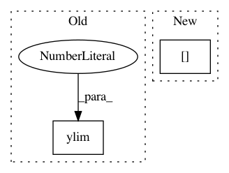

0e057cde99cc0825559ac62dee0d266077fac353,examples/pylab_examples/ganged_plots.py,,,#,13
Before Change
ax2 = plt.subplot(312, sharex=ax1)
ax2.plot(t, s2)
plt.yticks(np.arange(0.1, 1.0, 0.2))
plt.ylim(0, 1)
ax3 = plt.subplot(313, sharex=ax1)
ax3.plot(t, s3)
plt.yticks(np.arange(-0.9, 1.0, 0.4))
After Change
axs[1].plot(t, s2)
axs[1].set_yticks(np.arange(0.1, 1.0, 0.2))
axs[1].set_ylim(0, 1)
axs[2].plot(t, s3)
axs[2].set_yticks(np.arange(-0.9, 1.0, 0.4))
In pattern: SUPERPATTERN
Frequency: 3
Non-data size: 2
Instances
Project Name: matplotlib/matplotlib
Commit Name: 0e057cde99cc0825559ac62dee0d266077fac353
Time: 2017-03-07
Author: dstansby@gmail.com
File Name: examples/pylab_examples/ganged_plots.py
Class Name:
Method Name:
Project Name: SheffieldML/GPy
Commit Name: 6d0a7afd4cef71e7c8df4e1c6f02c18d9bb3e04f
Time: 2012-11-30
Author: james.hensman@gmail.com
File Name: GPy/models/uncertain_input_GP_regression.py
Class Name: uncertain_input_GP_regression
Method Name: plot
Project Name: NeuroTechX/moabb
Commit Name: 028274e8f52c54b10d632a61ee19a6e64f7a90e6
Time: 2018-02-14
Author: vjayaram@danube.is.localnet
File Name: examples/MotorImagery/two_class_motor_imagery.py
Class Name:
Method Name: